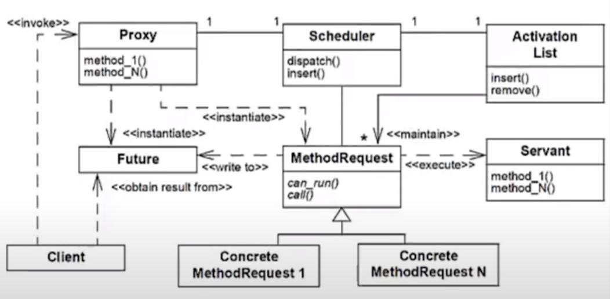
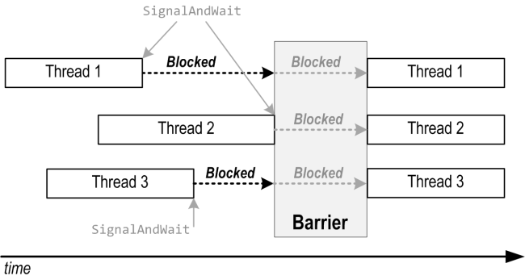
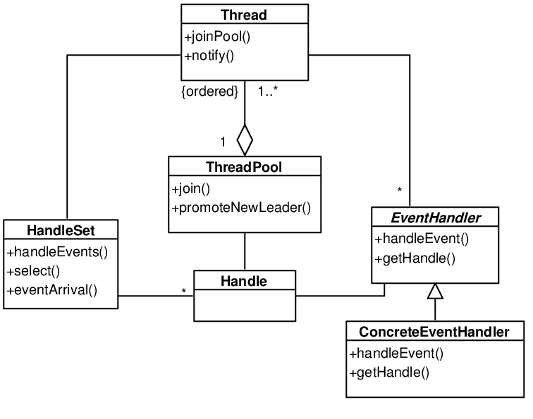
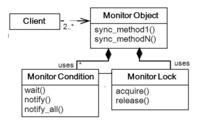
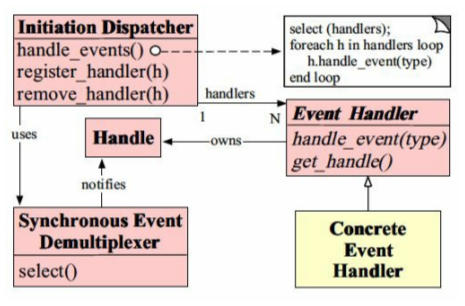

8 minutes
Concurrency Patterns
Concurrency Design Patterns describe ways of dealing with concurrent executing code, be it multi-threaded or multi-processed.
Active Object
Decouple method execution from method invocation for objects that each live in their own thread of control. The goal is to introduce concurrency, by using asynchronous method invocation and a scheduler for handling requests.
The Active Object pattern introduces the following components:
- Proxy
- The interface of the object to which a client connects to.
- Resides in the client thread.
- Automatically converts an invoked method to a method request.
- Servant
- Defines the behavior and state of the active object.
- Provides implementation of the active object.
- Activation/Dispatch Queue
- Maintains a buffer of pending requests created by Proxy.
- Keeps track of which requests can execute.
- Scheduler
- Decides which request should be executed next.
- Result Handle or Callback
- Allows Proxy to get the result post execution.
 Active Object Structure
A Client invokes a method via the Proxy on it’s thread, such as method_N(). The Proxy automatically instantiates this method into an object of type MethodRequest while preserving all argument bindings to the method required for execution, and passes it onto the Scheduler which stores it in a Dispatch Queue via the insert() interface. A Callback/Future is returned to the Client if the method returns any value. The Scheduler runs in the same thread as the Active Object, and keeps monitoring the Activation/Dispatch Queue. If any of the ConcreteMethodRequest becomes ready for execution, the Scheduler uses the interface dispatch() to pass them onto a Servant thread for execution.
Implementation Example: Active Object Pattern
Balking Pattern
Only executes an action on an object when the object is in a particular state.
The Balking pattern is meant to deal with incomplete and incorrect states, and ensure synchronization between threads and processes. This allows for coordination among various readers and writers to an object’s change of state and reduces inconsistency. When the object is in an inappropriate state, the method simply returns without any execution.
NOTE: It is considered to be an anti-pattern since an object’s state can get stuck and not update for an indefinite amount of time.
Implementation Example: Balking Pattern
Barrier Pattern
Any thread/process must stop at this point and cannot proceed until all other threads/processes reach this barrier.
The Barrier pattern imposes a barrier - execution shall not continue till this barrier is lifted. The purpose of this barrier is to ensure that all required data has been gathered before moving forward.
The Barrier functions as a conjunction of two variables:
- State: Maintains whether the barrier is in the STOP state or PASS state.
- STOP state entails that all threads reaching the barrier will be stopped to wait for other threads.
- PASS state entails that the threads are now allowed to finish.
- Counter: Maintains a count of how many threads have reached the barrier.
The barrier state is initialized in the STOP state by the initial threads reaching the barrier, and all threads coming at the barrier are therefore stopped, until the last thread arrives. The last thread switches the barrier state to PASS state. Till then, the waiting threads keep polling the barrier state for a cue to finish.
 Barrier Pattern Structure
Threads 1 and 3 reach the Barrier early and invoke SingalAndWait() to wait for the Barrier to be set to PASS state. As soon as Thread 2, the last thread, reaches the Barrier, all threads are allowed to pass.
Since all threads poll the state, the process can result in high communication traffic. In such a scenario, a Multi-Level Barrier can be implemented.
- Combining Tree Barrier
- A k-Tree Barrier has subgroups of k threads wherein all threads shall synchronize within their groups. Once a group has consolidated it’s results, the first thread of each group is lifted to the second level where new subgroups of k threads form and synchronize. The procedure continues till the top, at which point the final synchronization releases the barrier and all threads are allowed to pass.
- Hardware Barrier Implementation
- Dedicated circuitry is used to implement a barrier with simple AND/OR operations to act as the barrier state and counter. It is feasible for smaller systems, but large systems are prone to encounter high latency with this design.
Implementation Example: Barrier Pattern
Double-Checked Locking Pattern
Reduce the overhead of acquiring a lock by testing the locking criterion (the “lock hint”) before acquiring the lock.
The Double-Checked Locking pattern is generally used to reduce synchronization overhead. For lazy-loading conditions, that is, for initializing a value when it is used for the first time, synchronization is important to ensure that:
- the expensive initialization process is not run multiple times, especially when the design dictates a Singleton pattern.
- inconsistency does not creep in when threads simultaneously access the same object.
This synchronization has additional overhead. The pattern aims to have a check for a valid instance of the object first, and then enter the synchronization. It is only effective when the overhead is significant, and needs to be avoided.
Implementation Example: Double-Checked Locking
Guarded Suspension Pattern
Threads often have to coordinate their actions. They begin by polling a condition that must be true before the execution can proceed.
The Guarded Suspension pattern manages execution of a block of code that is guarded by a Precondition which must be met before the execution of the block can proceed. An intrinsic Lock should be acquired to the state while the Precondition is being checked to maintain synchronization between parallelly running readers and writers. If the Precondition is not met,
- Precondition can then be polled for any change of state.
- Potential waste of CPU cycles since continuous polling will keep the state engaged.
- The current thread can be suspended with
wait()with a notification channel setup usingnotify()andnotifyAll()methods which can be called to update a single/all other threads if a state change occurs to retest the Precondition and allow the suspended threads to wake up.- Efficient since it simply suspends the thread till the appropriate time.
NOTE: The pattern shall only be used when it is known that the thread suspension will be for a finite and reasonable amount of time. For an indefinite amount of time, Balking pattern should be used.
Implementation Example: Guarded Suspension Pattern
Leader/Follower Pattern
Provides an efficient concurrency model where multiple threads take turns sharing a set of event sources in order to detect, demultiplex, dispatch, and process service requests that occur on these event sources.
The Leader/Follower pattern designates one of the threads as a leader. This thread will be responsible to process the next task that comes in to the queue. When a task arrives, the leader thread notifies the next thread in the thread pool, which then becomes the new leader thread after which the old leader proceeds to fulfill the task.
The following benefits arise from the pattern:
- Minimized locking overheads since no data is exchanged between the threads.
- Removes need for dynamic memory allocation for buffers.
The following shortcomings are encountered for the pattern:
- Minimized prioritization overheads since the requests are first-come-first-serve, however, becomes unsuitable if prioritization has to be performed.
- Single thread listens for I/O events at a time, which can introduce a bottleneck.
 Leader/Follower Pattern Structure
A Thread is chosen to be the leader from the ThreadPool via the promoteNewLeader() method. It then waits for an I/O event on the HandleSet. When a Client requests a task, a ConcreteEventHandle of type EventHandler is instantiated for the task and passed to the leader Thread. This Thread then uses the notify() method to raise the requirement of a new leader to the ThreadPool. When the Thread has completed it’s task, the ThreadPool uses the join() method to collect the Thread back into the pool.
Monitor Pattern
Synchronizes concurrent method execution to ensure that only one method at a time runs within an object. It also allows an object’s methods to cooperatively schedule their execution sequences.
The Monitor pattern defines a system wherein threads give up their (exclusive) access to an object and wait for a specified condition to be fulfilled. When the specified condition is fulfilled, the threads repossess the access and resume their execution.
 Monitor Pattern Structure
The Client can communicate with the interfaces defined by the MonitorObject such as sync_methodN(). The MonitorCondition and MonitorLock coordinate to allow and disallow synchronized methods to resume their processing.
Reactor Pattern
Event handling pattern for handling service requests delivered concurrently to a service handler by one or more inputs.
The Reactor pattern focuses on performing event demultiplexing in a synchronous manner. A service handler is responsible for dispatching service-specific requests, such as incoming connection requests using TCP. The connection is established using a new handler representing the endpoint of the connection. The next connection would be served in a similar way by the service handler. This demultiplexing can be delegated to a dispatcher as well if required.
 Reactor Pattern Structure
Handle is used to listen for events so that the SynchronousEventDemultiplexer can wait for events to occur on them. The SynchronousEventDemultiplexer blocks awaiting events to occur on a set of Handles. It returns when it is possible to initiate an operation on a Handle without blocking and informs the InitiationDispatcher. The InitiationDispatcher defines interfaces like regiser_handler(Handler), remove_handler(Handler) and handle_events() for registering, removing, and dispatching objects of type EventHandler. Applications register ConcreteEventHandler with the InitiationDispatcher to process certain types of events. When these events arrive, the InitiationDispatcher calls back the hook method of the appropriate ConcreteEventHandler.
Readers-Writer Lock Pattern
Synchronization primitive that solves one of the readers–writers problems. An RW lock allows concurrent access for read-only operations, while write operations require exclusive access.
The Readers-Write Lock pattern ensures allow multiple threads to parallelly read the data, however, to write the data an exclusive lock is required. This exclusive lock ensures that no other thread is able to access the data as long as this exclusive lock is engaged.
Implementation Example: Readers-Writer Lock Pattern
Citation: Pattern-Oriented Software Architecture, Patterns for Concurrent and Networked Objects, Volume 2, Drew Goldberg, Douglas Schmidt
design-patternsconcurrencyconcurrency-patternsactive-objectbalkingbarrierdouble-checked-lockingguarded-suspensionleader-followermonitorreactorreaders-writer-lock
1665 Words
2021-10-01 05:30 +0530